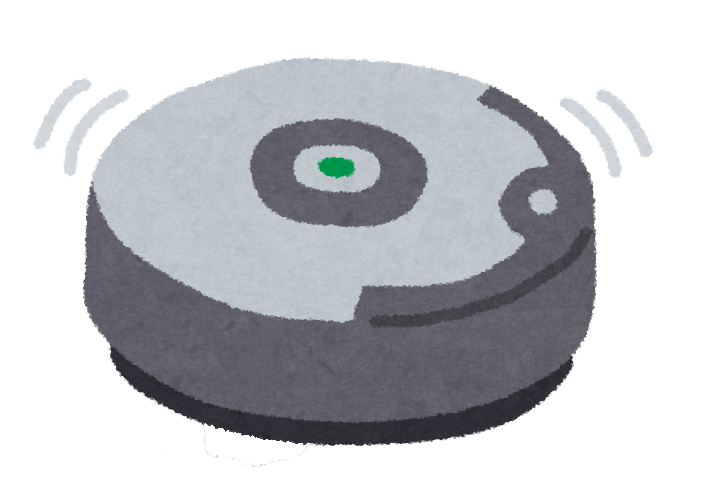
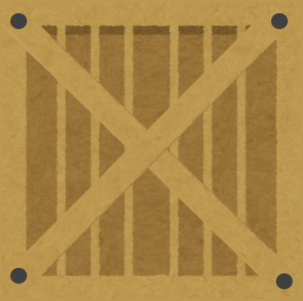
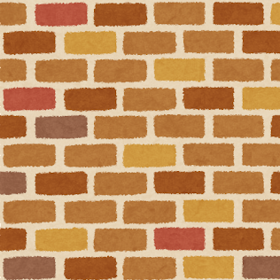

| 【倉庫掃除】遊び方 | ||||||||||||||||||||||||||||||||||||||||||||||||||||||||||||||||||||||||||||||||
|
ロボット掃除機（  ）を操作して、倉庫の床に落ちているすべてのゴミ（●）を一筆書きのルートで吸い込むパズルゲームです。1. 基本ルールと操作方法
・パソコンの場合：キーボードの [↑][↓][←][→]（矢印キー） で上下左右に移動します。・スマホ・タブレットの場合：画面下の [方向ボタン] をタップします。 ・「ゴミ（●）があるマス」にしか進めません。一度通って掃除した場所（空間）や、最初からゴミがない空間にはそのまま入れないため、一筆書きで進む必要があります。 クリアイメージ（一筆書きですべての黄色の●を吸い込む）
➡
一筆書き掃除
2. 2種類の荷物と進めない場所
倉庫には2種類の荷物があります。見た目で区別して進めましょう。・動かせる荷物（  ）：押し出す先の1マスが「ゴミのない空間（床）」になっているときだけ、1マス押して進むことができます。※押す先に「ゴミ（●）」「壁」「別の荷物」がある場合は押せません。 ・固定の荷物（）・レンガの壁（  ）：動かすことも通り抜けることもできません。・ゴミのない空間：ロボット掃除機単体では移動できませんが、「動かせる荷物」を押し込む場所として使えます。 荷物を押すイメージ（押す先が「空間」のときだけ押せる）
➡
右へ押す
3. いろいろな遊び方・攻略のコツ
・行き止まり（袋小路）をゴールにする：周りを壁や荷物に囲まれて「出口が1つしかないゴミマス」は、入ると出られなくなるため、必ず最後（ゴール）に回るルートを考えましょう。・空間の使い道を考える：最初からゴミがない空間や、一度掃除して空間になった場所は、動かせる荷物の「退避スペース」になります。どの荷物をどの空間へ押し込むか先にイメージするのがコツです。 ・島のようにゴミを残さない：1マスだけ取り残して周囲を掃除してしまうと二度と近づけなくなるため、壁際から順番に端を詰めていきましょう。 ・問題番号を変えて挑戦：上のプルダウンから問題を切り替えて、より広い倉庫の一筆書きにも挑戦してみましょう。 4. 画面の見方とボタン
・[RESET]ボタンをクリック（タップ）すると最初からやり直す事ができます。 |